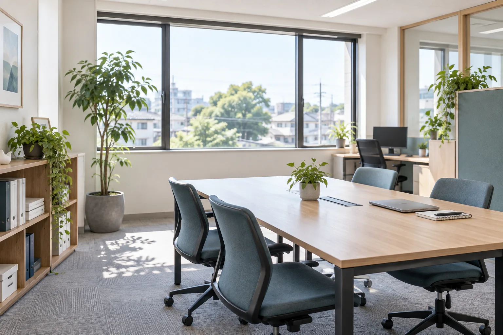
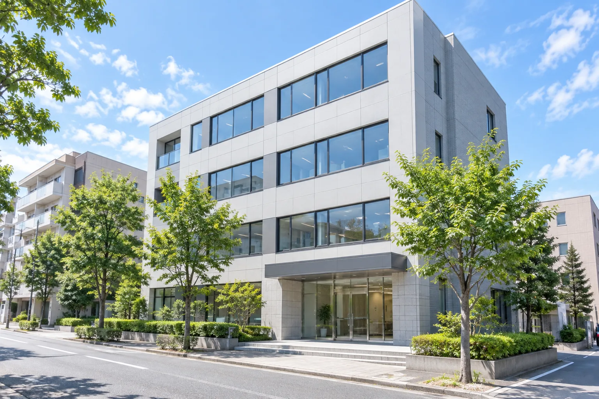

01
経営課題の整理
現状を丁寧に把握し、複雑な状況を整理。取り組むべき課題の優先順位を明らかにします。
掲載写真は提案用イメージです
ABOUT
株式会社CPIは、東京都昭島市を拠点にコンサルティング事業を展開しています。
課題を丁寧に整理し、計画をつくるだけでなく、実行のプロセスまで伴走。対話を重ねながら、次の一歩を具体化します。
会社情報を見る →
SERVICES
課題の整理から実行まで、一貫して支援します。
現状を丁寧に把握し、複雑な状況を整理。取り組むべき課題の優先順位を明らかにします。
実現可能性を見極めながら計画を具体化し、実行段階の意思決定と進行を支援します。
日々の業務や情報の流れを見直し、継続できる改善の形を一緒につくります。
COMPANY
昭島市を拠点に、事業課題に向き合います。

CONTACT
ご相談内容が固まっていない段階でも構いません。現状を伺いながら、必要な進め方を整理します。